Zvažovali jsme, jestli svěřit design interiéru profesionálovi. Líbí se nám například Martina Design. Zatím je to otevřené, ale spíše to vypadá, že si interiér navrhneme sami. Máme vcelku jasnou představu. Líbí se nám Skandinávský styl - minimalismus, přírodní materiály, světlé neutrální barvy, jednoduché linie a maximální funkčnost. Chceme se zcela vyhnout imitacím dřeva nebo kamene. Pokud použijeme dřevo, tak to bude masiv nebo dýha, nikoliv lamino.
Na internetu je mnoho různých nástrojů a služeb, se kterými lze za pár minut vytvořit jednoduchý návrh interiéru. Pár nástrojů jsem vyzkoušel a nejvíce se mi zalíbil Homestyler. Dají se v něm navrhnout pěkné interiéry. Zkusil jsem vytvořit vizualizaci budoucího obýváku. Software má bohužel své mouchy. Například omezený výčet 3D modelů, kde jsem nenašel ani jednoduché bílé dveře. V návrhu tedy k sobě moc neladí barvy a materiály, ale aspoň si člověk může zkusit rozmístit nábytek a udělat si obrázek o velikosti prostoru.
Návrh a vizualizaci interiéru plánuji dělat ve SketchUp, který má téměř neomezené možnosti.
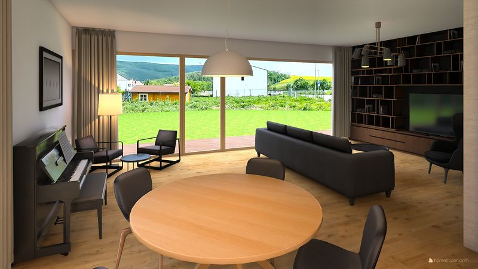
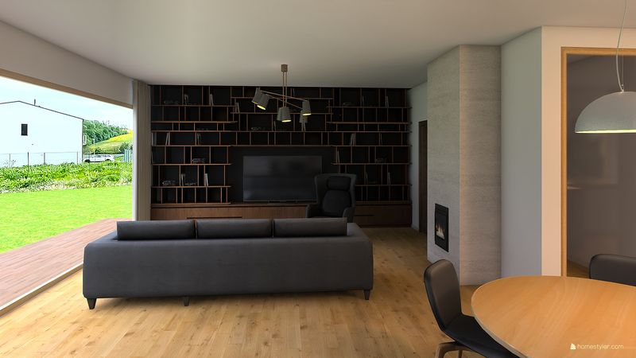
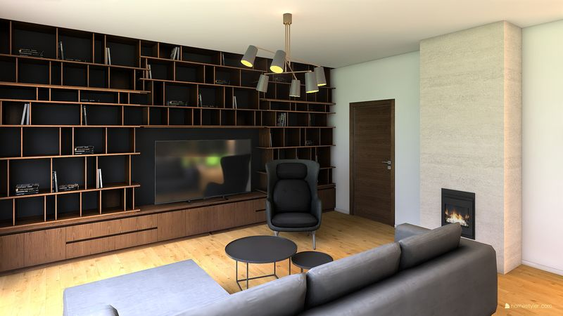
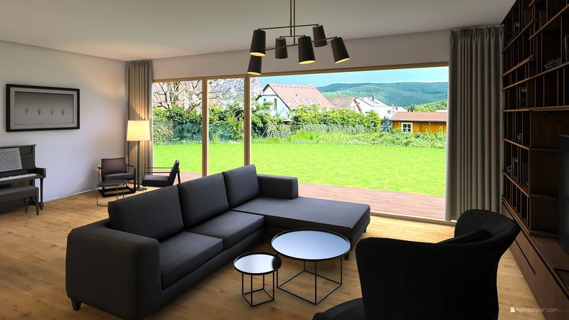
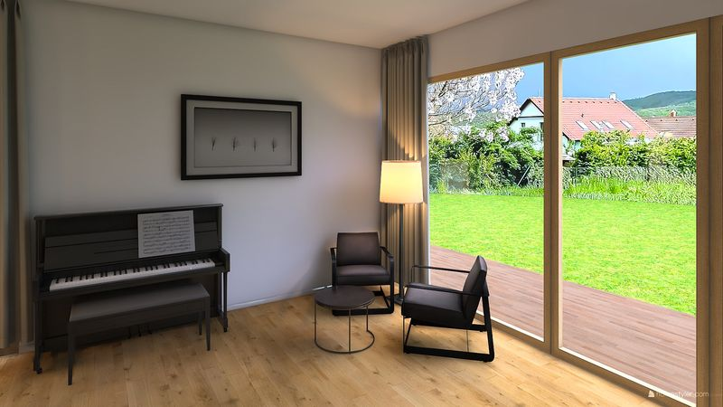
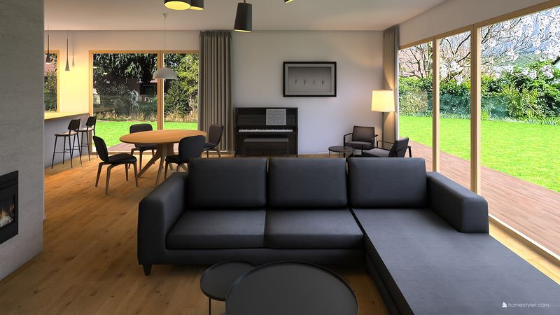
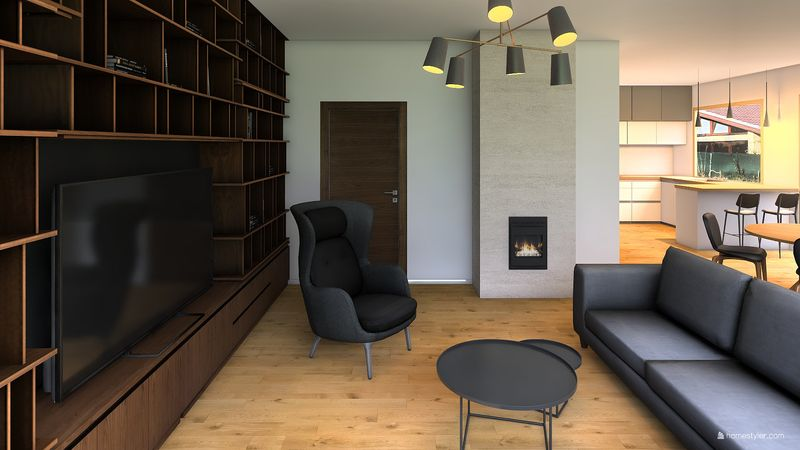
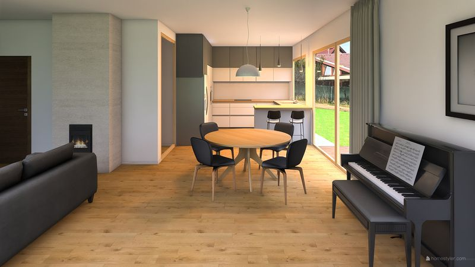
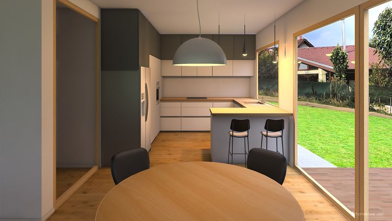
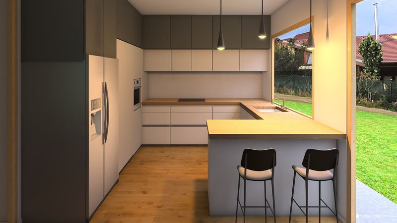
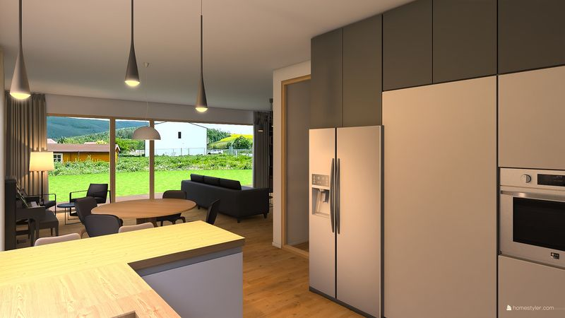